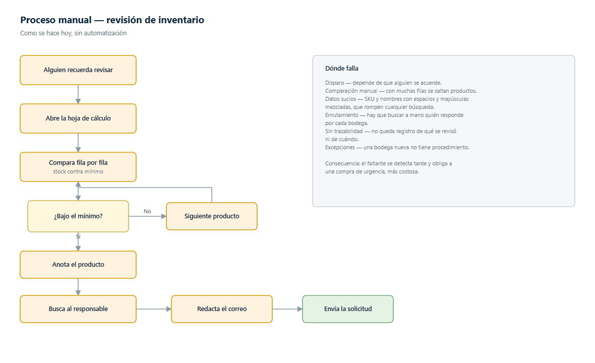

La solución
Un workflow, tres entradas

Alerta automática de inventario5
Un despacho actualiza el stock y avisa solo, en el momento
en que un producto cruza su mínimo.
| Sebastián Betancourth | Entorno, credenciales y versionado |
| Felipe Castaño | Construcción del flujo |
| Juan Camilo Castañeda | Pruebas y evidencias |
| Mateo Albornoz | Documentación y datos |
En la bodega los despachos se anotaban en una hoja de cálculo. Para saber si un producto se estaba agotando, alguien tenía que abrirla y comparar fila por fila el stock contra el mínimo.
El problema no es que la comparación sea difícil. Es que depende de que una persona se acuerde de hacerla. Cuando no se hacía, el faltante se descubría al ir a despachar, y la reposición pasaba a ser una compra de urgencia.
Depende de que alguien se acuerde.
Con muchas filas se saltan productos.
No queda registro de qué se revisó ni cuándo.

Lo excluido se excluyó a propósito y se explica en la documentación. No es una lista de lo que faltó.
| Servicio | Para qué | Cómo |
|---|---|---|
| Supabase | Tablas Productos, Movimientos y Errores | HTTP Request sobre PostgREST |
| Gmail | Alerta de stock y correo del resumen | OAuth2 |
| Google Gemini | Redacción del resumen y agente de consulta | gemini-3.5-flash-lite |
La consulta previa responde rápido, pero lo que de verdad impide el doble descuento es la restricción unique sobre movimiento_id en la base de datos.
El PATCH envía Prefer: return=representation y el flujo comprueba que el stock devuelto coincide con el calculado. Sin esa cabecera, PostgREST responde 204 aunque no haya modificado nada.
Los totales del resumen los produce un nodo Code a partir de las filas de la base de datos. Gemini recibe el resultado ya calculado y solo lo convierte en un texto legible.
Una plantilla fija daría el mismo texto todas las semanas y no destacaría lo que cambió. En el agente, interpreta las infinitas formas de decir un periodo.
Un nodo extrae los números del texto del modelo y antepone [REVISAR] a los que no provienen del cálculo.
El agente tiene una sola herramienta y es de lectura. No es una instrucción que se le pide obedecer: es que no existe ninguna otra.
El correo del resumen lleva el texto redactado y las cifras crudas, para que cualquiera pueda comprobar si una cosa corresponde a la otra. Esa decisión resultó ser la que permitió encontrar el fallo de la diapositiva 10.
Estado inicial: SIM-002 con stock 12 y mínimo 10.
Productos.stockActual pasa de 12 a 7alerta_enviada: falsealerta_enviada pasa a true, porque el correo salióLa misma petición otra vez: responde 200 con duplicado: true, el stock se queda en 7 y no sale un segundo correo.
Un flujo que responde siempre 200 no permite saber qué pasó. Las once rutas del webhook terminan en una respuesta distinta según el motivo.
| Código | Cuándo | Por qué importa |
|---|---|---|
| 400 | Contrato inválido | Se rechaza sin tocar la base de datos |
| 404 | El SKU no existe | Distinto de «no pude consultar» |
| 409 | Stock insuficiente | Rechazo de negocio, no error técnico |
| 500 | No se pudo registrar el movimiento | El stock ya se descontó: hay que saberlo |
| 502 | Supabase caído o descuento no confirmado | No se convierte en un 404 falso. Cubre el servicio que responde mal y el que no responde |
El agente informó 93 movimientos y 256 unidades para la semana del 2 al 8 de noviembre. Al contrastar contra la ejecución real de n8n, la URL que había salido era:
gteEl nodo declaraba dos parámetros con el mismo nombre creado_en. n8n los construye como un objeto, así que el segundo pisaba al primero y el límite inferior desaparecía.
De las 93 filas devueltas, solo 35 caían dentro del periodo.
Redactó con exactitud lo que el flujo calculó. El fallo estaba aguas arriba, en la consulta.
Se corrigió agrupando las dos condiciones: and=(creado_en.gte.X,creado_en.lte.Y).
| Qué comprobamos | Cómo lo comprobamos |
|---|---|
| Una salida de 200 con 20 en stock se rechaza con 409 y no descuenta nada | Los nodos de escritura no aparecen en la ejecución 188 |
| La rama de alerta completa: registra, envía el correo, marca la alerta y responde 200 | Ejecución 192 de punta a punta, más el correo con las cifras coincidentes |
| El movimiento se registra antes de notificar | Orden de los nodos dentro de esa misma ejecución |
| El agente se niega a escribir | La respuesta, y los logs: no invocó ninguna herramienta |
| El agente vuelve a consultar en lugar de recitar | Dos llamadas distintas, con la cifra movida en el movimiento añadido |
En ninguno de los cinco damos por bueno el código de respuesta. Lo que registramos es el efecto: qué nodos corrieron, qué quedó escrito y qué llegó al correo.
| Fallo | Cómo se encontró | Estado |
|---|---|---|
| El filtro del periodo perdía el límite inferior | Contrastando la cifra contra la ejecución | Corregido, falta reverificar |
| Un Supabase inalcanzable no devolvía 502: el flujo se detenía sin responder nada | Rompiendo el host a propósito | Corregido, falta reverificar |
| La herramienta del agente no recibía el periodo | Leyendo la ejecución del subworkflow | Corregido y comprobado |
| El agente pedía fechas que ya había calculado | Probando una consulta normal | Corregido y comprobado |
Marcar alerta enviada sin credencial | Revisando el archivo | Corregido y verificado en la ejecución 192 |
De los doce casos previstos, nueve se ejecutaron y tres no. Cinco de los nueve no cumplieron a la primera, y de ahí salieron las correcciones de arriba. Dos de ellas siguen sin volver a probarse, y así constan en la bitácora.
Comprobar que la IA respondió bien no comprueba que el flujo esté bien.
Dos parámetros con el mismo nombre no dan error: uno gana en silencio.
neverError neutraliza los códigos de error. Un servicio inalcanzable no devuelve código: no devuelve nada.
También aprendimos a comprobar qué versión estamos probando: una de las reverificaciones falló porque n8n tenía cargada una copia anterior a la corrección.
Error Trigger no admite otros disparadores en el mismo workflow. Se entrega como anexo.Todo esto está en la documentación y en la bitácora, con el estado real de cada pendiente.
Público. Contiene el workflow en un solo archivo, la documentación, la bitácora de pruebas con sus evidencias, los diagramas y esta presentación.
Los datos de inventario son ficticios y llevan el prefijo SIM-. No hay credenciales en el repositorio: el README explica cómo crear las propias.